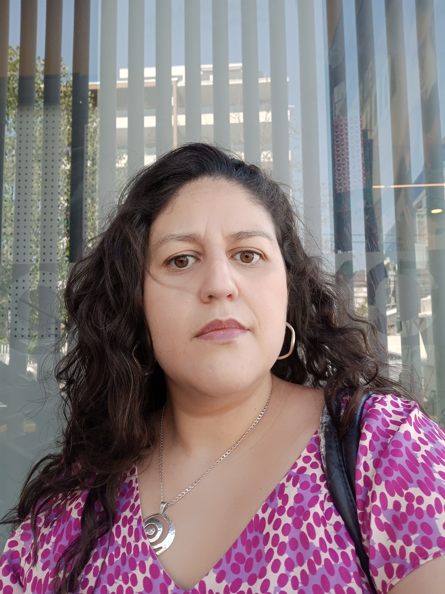

Titulada con distinción académica de la Universidad Andrés Bello. Especialista en Cuidados Intensivos Pediátricos, Neonatología, soporte extracorpóreo (ECMO) y gestión de calidad asistencial con enfoque humanizado.

Perfil profesional y antecedentes personales
Enfermera con amplia trayectoria en Cuidados Intensivos Pediátricos (UPCP), Neonatología y Gestión Integral del Paciente en entornos hospitalarios y ambulatorios de alta complejidad, tanto en el sector público como privado (Hospital Roberto del Río, Hospital Exequiel González Cortés, Clínica Alemana, RedSalud y MINSAL).
Especializada en gestión de calidad asistencial, instalación y manejo de dispositivos vasculares avanzados (PICC ecoguiado) y operación de pacientes críticos en soporte vital extracorpóreo (ECMO). Destaco por mi liderazgo en equipos multidisciplinarios, resolución de contingencias, resiliencia y un enfoque humanizado centrado en el paciente y su entorno familiar.
Trayectoria asistencial y de gestión clínica
Atención Domiciliaria y Ambulatoria, Santiago
Gestión integral, monitoreo hemodinámico de pacientes de alta complejidad, farmacología avanzada, curaciones complejas y educación sanitaria a familias.
Hospital Exequiel González Cortés
Administración de fármacos de precisión bajo normas de seguridad del paciente, control estricto de normas IAAS y registro en fichas clínicas electrónicas.
MINSAL (Ministerio de Salud)
Optimización, priorización y asignación de camas críticas en la red asistencial nacional pública en coordinación directa con directivos y jefaturas médicas.
Clínica Alemana
Soporte vital y cuidado integral en paciente pediátrico crítico, manejo especializado en riesgo vital y supervisión de equipos técnicos (TENS).
RedSalud Vitacura
Monitoreo hemodinámico continuo en cuidados intensivos pediátricos, implementación de protocolos de calidad asistencial y normativas vigentes.
Hospital Roberto del Río
Protocolos PALS, monitorización de neurocríticos y cardiópatas complejos, operación y control de ECMO y programación de ventilación mecánica de alta frecuencia.
Desarrollos y aplicaciones front-end publicados
Proyecto web enfocado en diseño responsivo, estructuración de interfaces de usuario y maquetación web moderna.
Aplicación interactiva desarrollada en GitHub Pages, implementando funcionalidades dinámicas y componentes adaptativos para diferentes dispositivos.
Ponte en contacto para consultas profesionales